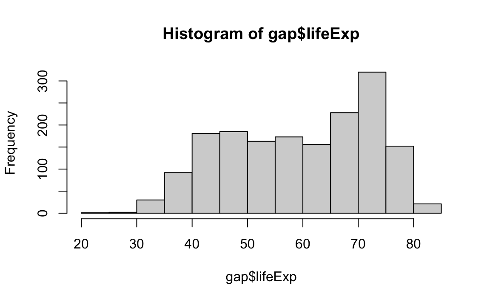

Chapter 9 Data Transformation
9.1 Introduction to Data
The upcoming weeks will be focused on using R for data cleaning and analysis. Let’s first get on the same page with some terms:
A variable is a quantity, quality, or property that you can measure.
An observation is a set of measurements for the same unit. An observation will contain several values, each associated with a different variable. I will sometimes refer to an observation as a data point or an element.
A value is the state of a variable for a particular observation.
Tabular data are a set of values, each associated with a variable and an observation. Tabular data have rows (observations) and columns (variables). Tabular data are also called rectangular data or spreadsheets.
9.1.1 The Gapminder Dataset
This lesson discusses how to perform basic exploratory data analysis.
For this unit, we will be working with the “Gapminder” dataset, which is an excerpt of the data available at gapminder.org. For each of 142 countries, the data provide values for life expectancy, GDP per capita, and population, every five years from 1952 to 2007.
9.1.2 Structure and Dimensions
By loading the gapminder package, we now have access to a data frame by the same name. Get an overview of this with str(), which displays the structure of an object.
str(gap)
#> tibble [1,704 × 6] (S3: tbl_df/tbl/data.frame)
#> $ country : Factor w/ 142 levels "Afghanistan",..: 1 1 1 1 1 1 1 1 1 1 ...
#> $ continent: Factor w/ 5 levels "Africa","Americas",..: 3 3 3 3 3 3 3 3 3 3 ...
#> $ year : int [1:1704] 1952 1957 1962 1967 1972 1977 1982 1987 1992 1997 ...
#> $ lifeExp : num [1:1704] 28.8 30.3 32 34 36.1 ...
#> $ pop : int [1:1704] 8425333 9240934 10267083 11537966 13079460 14880372 12881816 13867957 16317921 22227415 ...
#> $ gdpPercap: num [1:1704] 779 821 853 836 740 ...str() will provide a sensible description of almost anything and, worst case, nothing bad can actually happen. When in doubt, just str() some of the recently created objects to get some ideas about what to do next.
We could print the gapminder object itself to screen. However, if you have used R before, you might be reluctant to do this, because large datasets just fill up your Console and provide very little insight.
The head function displays the first 6 rows of any dataframe.
head(gap)
#> # A tibble: 6 x 6
#> country continent year lifeExp pop gdpPercap
#> <fct> <fct> <int> <dbl> <int> <dbl>
#> 1 Afghanistan Asia 1952 28.8 8425333 779.
#> 2 Afghanistan Asia 1957 30.3 9240934 821.
#> 3 Afghanistan Asia 1962 32.0 10267083 853.
#> 4 Afghanistan Asia 1967 34.0 11537966 836.
#> 5 Afghanistan Asia 1972 36.1 13079460 740.
#> 6 Afghanistan Asia 1977 38.4 14880372 786.Here are some more common ways to query info from a dataframe:
# Get number of rows and columns:
dim(gap)
#> [1] 1704 6
# See column names:
names(gap)
#> [1] "country" "continent" "year" "lifeExp" "pop" "gdpPercap"
# A statistical overview can be obtained with summary():
summary(gap)
#> country continent year lifeExp
#> Afghanistan: 12 Africa :624 Min. :1952 Min. :23.6
#> Albania : 12 Americas:300 1st Qu.:1966 1st Qu.:48.2
#> Algeria : 12 Asia :396 Median :1980 Median :60.7
#> Angola : 12 Europe :360 Mean :1980 Mean :59.5
#> Argentina : 12 Oceania : 24 3rd Qu.:1993 3rd Qu.:70.8
#> Australia : 12 Max. :2007 Max. :82.6
#> (Other) :1632
#> pop gdpPercap
#> Min. :6.00e+04 Min. : 241
#> 1st Qu.:2.79e+06 1st Qu.: 1202
#> Median :7.02e+06 Median : 3532
#> Mean :2.96e+07 Mean : 7215
#> 3rd Qu.:1.96e+07 3rd Qu.: 9325
#> Max. :1.32e+09 Max. :113523
#> 9.1.3 Variables
To specify a single variable from a data frame, use the dollar sign $. Let’s explore the numeric variable for life expectancy.
head(gap$lifeExp)
#> [1] 28.8 30.3 32.0 34.0 36.1 38.4
summary(gap$lifeExp)
#> Min. 1st Qu. Median Mean 3rd Qu. Max.
#> 23.6 48.2 60.7 59.5 70.8 82.6
hist(gap$lifeExp)
Data frames – unlike matrices in R – can hold variables of different flavors, such as character data (subject ID or name), quantitative data (white blood cell count), and categorical information (treated vs. untreated).
For example, the year variables is numeric, while the variables for country and continent hold categorical information, which is stored as a factor in R.
summary(gap$year)
#> Min. 1st Qu. Median Mean 3rd Qu. Max.
#> 1952 1966 1980 1980 1993 2007
summary(gap$country)
#> Afghanistan Albania Algeria
#> 12 12 12
#> Angola Argentina Australia
#> 12 12 12
#> Austria Bahrain Bangladesh
#> 12 12 12
#> Belgium Benin Bolivia
#> 12 12 12
#> Bosnia and Herzegovina Botswana Brazil
#> 12 12 12
#> Bulgaria Burkina Faso Burundi
#> 12 12 12
#> Cambodia Cameroon Canada
#> 12 12 12
#> Central African Republic Chad Chile
#> 12 12 12
#> China Colombia Comoros
#> 12 12 12
#> Congo, Dem. Rep. Congo, Rep. Costa Rica
#> 12 12 12
#> Cote d'Ivoire Croatia Cuba
#> 12 12 12
#> Czech Republic Denmark Djibouti
#> 12 12 12
#> Dominican Republic Ecuador Egypt
#> 12 12 12
#> El Salvador Equatorial Guinea Eritrea
#> 12 12 12
#> Ethiopia Finland France
#> 12 12 12
#> Gabon Gambia Germany
#> 12 12 12
#> Ghana Greece Guatemala
#> 12 12 12
#> Guinea Guinea-Bissau Haiti
#> 12 12 12
#> Honduras Hong Kong, China Hungary
#> 12 12 12
#> Iceland India Indonesia
#> 12 12 12
#> Iran Iraq Ireland
#> 12 12 12
#> Israel Italy Jamaica
#> 12 12 12
#> Japan Jordan Kenya
#> 12 12 12
#> Korea, Dem. Rep. Korea, Rep. Kuwait
#> 12 12 12
#> Lebanon Lesotho Liberia
#> 12 12 12
#> Libya Madagascar Malawi
#> 12 12 12
#> Malaysia Mali Mauritania
#> 12 12 12
#> Mauritius Mexico Mongolia
#> 12 12 12
#> Montenegro Morocco Mozambique
#> 12 12 12
#> Myanmar Namibia Nepal
#> 12 12 12
#> Netherlands New Zealand Nicaragua
#> 12 12 12
#> Niger Nigeria Norway
#> 12 12 12
#> Oman Pakistan Panama
#> 12 12 12
#> (Other)
#> 516
summary(gap$contintent)
#> Warning: Unknown or uninitialised column: `contintent`.
#> Length Class Mode
#> 0 NULL NULLSometimes we need to do some basic checking for the number of observations or types of observations in our dataset. To do this quickly and easily, table() is our friend.
Let’s look at the number of observations first by region, and then by both region and year:
table(gap$continent)
#>
#> Africa Americas Asia Europe Oceania
#> 624 300 396 360 24
table(gap$continent, gap$year)
#>
#> 1952 1957 1962 1967 1972 1977 1982 1987 1992 1997 2002 2007
#> Africa 52 52 52 52 52 52 52 52 52 52 52 52
#> Americas 25 25 25 25 25 25 25 25 25 25 25 25
#> Asia 33 33 33 33 33 33 33 33 33 33 33 33
#> Europe 30 30 30 30 30 30 30 30 30 30 30 30
#> Oceania 2 2 2 2 2 2 2 2 2 2 2 2We can even divide by the total number of rows to get proportion, percent, etc.:
9.1.4 Challenges
Challenge 1.
Read the polity_sub dataset in the Data sub-directory.
Challenge 2.
Report the number and name of each variable in the dataset.
Challenge 3.
What is the mean polity2 score in the dataset?
Challenge 4.
What is the range of the polity2 variable?
Challenge 5.
How many unique countries are in the dataset?
9.2 Introduction to dplyr
9.2.1 tidyverse
It is often said that 80% of data analysis is spent on the process of cleaning and preparing the data.
Dasu and Johnson, 2003
For most applied researchers, data preparation usually involves 3 main steps:
- Transforming data frames, e.g., filtering, summarizing, and conducting calculations across groups.
- Tidying data into the appropriate format.
- Merging or linking several datasets to create a bigger dataset.
The tidyverse is a suite of packages designed specifically to help with these steps. These are by no means the only packages out there for data wrangling, but they are increasingly popular for their readable, straightforward syntax and sensible default behaviors.
In this chapter, we are going to focus on how to use the dplyr package for data transformation tasks.
For this unit, we will be working with the Gapminder dataset again.
library(tidyverse)
library(gapminder)
gap <- gapminder
head(gap)
#> # A tibble: 6 x 6
#> country continent year lifeExp pop gdpPercap
#> <fct> <fct> <int> <dbl> <int> <dbl>
#> 1 Afghanistan Asia 1952 28.8 8425333 779.
#> 2 Afghanistan Asia 1957 30.3 9240934 821.
#> 3 Afghanistan Asia 1962 32.0 10267083 853.
#> 4 Afghanistan Asia 1967 34.0 11537966 836.
#> 5 Afghanistan Asia 1972 36.1 13079460 740.
#> 6 Afghanistan Asia 1977 38.4 14880372 786.9.2.2 Why dplyr?
If you have ever used base R before, you know the following will calculate the mean GDP per capita within each region:
mean(gap$gdpPercap[gap$continent == "Africa"])
#> [1] 2194
mean(gap$gdpPercap[gap$continent == "Americas"])
#> [1] 7136
mean(gap$gdpPercap[gap$continent == "Asia"])
#> [1] 7902But this is not ideal because it involves a fair bit of repetition. Repeating yourself will cost you time, both now and later, and potentially introduce some nasty bugs.
Luckily, the dplyr package provides a number of very useful functions for manipulating dataframes. These functions will save you time by reducing repetition. As an added bonus, you might even find the dplyr grammar easier to read.
Here, we are going to cover 7 of the most commonly used dplyr functions. We will also cover pipes (%>%), which are used to combine those functions.
select()filter()mutate()arrange()count()group_by()summarize()mutate()
If you have not installed tidyverse, please do so now:
9.2.3 Select Columns with select
Imagine that we have just received the Gapminder dataset, but are only interested in a few variables in it. We could use the select() function to keep only the variables we select.
year_country_gdp <- select(gap, year, country, gdpPercap)
head(year_country_gdp)
#> # A tibble: 6 x 3
#> year country gdpPercap
#> <int> <fct> <dbl>
#> 1 1952 Afghanistan 779.
#> 2 1957 Afghanistan 821.
#> 3 1962 Afghanistan 853.
#> 4 1967 Afghanistan 836.
#> 5 1972 Afghanistan 740.
#> 6 1977 Afghanistan 786.
If we open up year_country_gdp, we will see that it only contains the year, country, and gdpPercap. This is equivalent to the base R subsetting function:
year_country_gdp_base <- gap[,c("year", "country", "gdpPercap")]
head(year_country_gdp)
#> # A tibble: 6 x 3
#> year country gdpPercap
#> <int> <fct> <dbl>
#> 1 1952 Afghanistan 779.
#> 2 1957 Afghanistan 821.
#> 3 1962 Afghanistan 853.
#> 4 1967 Afghanistan 836.
#> 5 1972 Afghanistan 740.
#> 6 1977 Afghanistan 786.9.2.4 The Pipe

Above, we used what is called ‘normal’ grammar, but the strengths of dplyr lie in combining several functions using pipes.
In typical base R code, a simple operation might be written like:
A computer has no trouble understanding this, and your cupcakes will be made just fine, but a person has to read right to left to understand the order of operations – the opposite of how most Western languages are read – making it harder to understand what is being done!
To be more readable without pipes, we might break up this code into intermediate objects:
But this can clutter our environment with a lot of variables that are not very useful to us. Plus, these variables are often named very similar things (e.g., step, step1, step2…), which can lead to confusion and the creation of hard-to-track-down bugs.
Enter the Pipe…
The pipe makes it easier to read code by laying out operations from left to right – each line can be read like a line of a recipe for the perfect data frame!
Pipes take the input on the left side of the %>% symbol and pass it in as the first argument to the function on the right side.
With pipes, our cupcake example might be written like:
select & Pipe (%>%)
Let’s repeat what we did above with the Gapminder dataset using pipes:
First, we summon the gapminder data frame and pass it on to the next step using the pipe symbol %>%.
The second step is the select() function. In this case, we do not specify which data object we use in the call to select() since we have piped it in from the previous line.
Tips for Piping
Remember that you do not assign anything within the pipes — that is, you should not use
<-inside the piped operation. Only use<-at the beginning of your code if you want to save the output.Remember to add the pipe
%>%at the end of each line involved in the piped operation. A good rule of thumb: since RStudio will automatically indent lines of code that are part of a piped operation, if the line is not indented, it probably has not been added to the pipe. If you have an error in a piped operation, always check to make sure the pipe is connected as you expect.In RStudio, the hotkey for the pipe is
Ctrl + Shift + M.
9.2.5 Filter Rows with filter
Now let’s say we are only interested in African countries. We can combine select and filter to select only the observations where continent is Africa.
year_country_gdp_africa <- gap %>%
filter(continent == "Africa") %>%
select(year, country, gdpPercap)As with last time, first we pass the gapminder dataframe to the filter() function, then we pass the filtered version of the Gapminder dataframe to the select() function.
To clarify, both the select and filter functions subset the data frame. The difference is that select extracts certain columns, while filter extracts certain rows.
NB: The order of operations is very important in this case. If we used select first, filter would not be able to find the variable continent, since we would have removed it in the previous step.
9.3 More dplyr functions
Where were we?
In the previous lesson, we used two very important verbs and an operator:
filter()for subsetting data with row logic.select()for subsetting data variable- or column-wise.- The pipe operator
%>%, which feeds the LHS as the first argument to the expression on the RHS.
We also discussed dplyr’s role inside the tidyverse:
dplyris a core package in the tidyverse meta-package.- Since we often make incidental usage of the others, we will load
dplyrand the others vialibrary(tidyverse).
9.3.1 Use mutate() to Add New Variables
Imagine we wanted to recover each country’s GDP. After all, the Gapminder data has a variable for population and GDP per capita. Let’s multiply them together.
mutate() is a function that defines and inserts new variables into a tibble. You can refer to existing variables by name.
gap %>%
mutate(gdp = pop * gdpPercap) %>%
head()
#> # A tibble: 6 x 7
#> country continent year lifeExp pop gdpPercap gdp
#> <fct> <fct> <int> <dbl> <int> <dbl> <dbl>
#> 1 Afghanistan Asia 1952 28.8 8425333 779. 6567086330.
#> 2 Afghanistan Asia 1957 30.3 9240934 821. 7585448670.
#> 3 Afghanistan Asia 1962 32.0 10267083 853. 8758855797.
#> 4 Afghanistan Asia 1967 34.0 11537966 836. 9648014150.
#> 5 Afghanistan Asia 1972 36.1 13079460 740. 9678553274.
#> 6 Afghanistan Asia 1977 38.4 14880372 786. 11697659231.We can add multiple columns in one call:
gap %>%
mutate(gdp = pop * gdpPercap,
log_gdp = log(gdp)) %>%
head()
#> # A tibble: 6 x 8
#> country continent year lifeExp pop gdpPercap gdp log_gdp
#> <fct> <fct> <int> <dbl> <int> <dbl> <dbl> <dbl>
#> 1 Afghanistan Asia 1952 28.8 8425333 779. 6567086330. 22.6
#> 2 Afghanistan Asia 1957 30.3 9240934 821. 7585448670. 22.7
#> 3 Afghanistan Asia 1962 32.0 10267083 853. 8758855797. 22.9
#> 4 Afghanistan Asia 1967 34.0 11537966 836. 9648014150. 23.0
#> 5 Afghanistan Asia 1972 36.1 13079460 740. 9678553274. 23.0
#> 6 Afghanistan Asia 1977 38.4 14880372 786. 11697659231. 23.29.3.2 Use arrange() to Row-order Data in a Principled Way
arrange() reorders the rows in a data frame. Imagine you wanted this data ordered by year then country, as opposed to by country then year.
gap %>%
arrange(year, country)
#> # A tibble: 1,704 x 6
#> country continent year lifeExp pop gdpPercap
#> <fct> <fct> <int> <dbl> <int> <dbl>
#> 1 Afghanistan Asia 1952 28.8 8425333 779.
#> 2 Albania Europe 1952 55.2 1282697 1601.
#> 3 Algeria Africa 1952 43.1 9279525 2449.
#> 4 Angola Africa 1952 30.0 4232095 3521.
#> 5 Argentina Americas 1952 62.5 17876956 5911.
#> 6 Australia Oceania 1952 69.1 8691212 10040.
#> # … with 1,698 more rowsOr maybe you want just the data from 2007, sorted on life expectancy?
gap %>%
filter(year == 2007) %>%
arrange(lifeExp)
#> # A tibble: 142 x 6
#> country continent year lifeExp pop gdpPercap
#> <fct> <fct> <int> <dbl> <int> <dbl>
#> 1 Swaziland Africa 2007 39.6 1133066 4513.
#> 2 Mozambique Africa 2007 42.1 19951656 824.
#> 3 Zambia Africa 2007 42.4 11746035 1271.
#> 4 Sierra Leone Africa 2007 42.6 6144562 863.
#> 5 Lesotho Africa 2007 42.6 2012649 1569.
#> 6 Angola Africa 2007 42.7 12420476 4797.
#> # … with 136 more rowsOh, you would like to sort on life expectancy in descending order? Then use desc().
gap %>%
filter(year == 2007) %>%
arrange(desc(lifeExp))
#> # A tibble: 142 x 6
#> country continent year lifeExp pop gdpPercap
#> <fct> <fct> <int> <dbl> <int> <dbl>
#> 1 Japan Asia 2007 82.6 127467972 31656.
#> 2 Hong Kong, China Asia 2007 82.2 6980412 39725.
#> 3 Iceland Europe 2007 81.8 301931 36181.
#> 4 Switzerland Europe 2007 81.7 7554661 37506.
#> 5 Australia Oceania 2007 81.2 20434176 34435.
#> 6 Spain Europe 2007 80.9 40448191 28821.
#> # … with 136 more rowsI advise that your analyses NEVER rely on rows or variables being in a specific order. But it is still true that human beings write the code, and the interactive development process can be much nicer if you reorder the rows of your data as you go along. Also, once you are preparing tables for human eyeballs, it is imperative that you step up and take control of row order.
9.3.3 Use rename() to Rename Variables
When I first cleaned this Gapminder excerpt, I was a camelCase person, but now I am all about snake_case. So I am vexed by the variable names I chose when I cleaned this data years ago. Let’s rename some variables!
gap %>%
rename(life_exp = lifeExp,
gdp_percap = gdpPercap)
#> # A tibble: 1,704 x 6
#> country continent year life_exp pop gdp_percap
#> <fct> <fct> <int> <dbl> <int> <dbl>
#> 1 Afghanistan Asia 1952 28.8 8425333 779.
#> 2 Afghanistan Asia 1957 30.3 9240934 821.
#> 3 Afghanistan Asia 1962 32.0 10267083 853.
#> 4 Afghanistan Asia 1967 34.0 11537966 836.
#> 5 Afghanistan Asia 1972 36.1 13079460 740.
#> 6 Afghanistan Asia 1977 38.4 14880372 786.
#> # … with 1,698 more rows9.3.4 Use select() to Rename and Reposition Variables
You have seen the simple use of select(). There are two tricks you might enjoy:
select()can rename the variables you request to keep.select()can be used witheverything()to hoist a variable up to the front of the tibble.
gap %>%
filter(country == "Burundi", year > 1996) %>%
select(yr = year, lifeExp, gdpPercap) %>%
select(gdpPercap, everything())
#> # A tibble: 3 x 3
#> gdpPercap yr lifeExp
#> <dbl> <int> <dbl>
#> 1 463. 1997 45.3
#> 2 446. 2002 47.4
#> 3 430. 2007 49.6everything() is one of several helpers for variable selection. Read its help to see the rest.
9.3.5 Use count() to Count Variable Quantities
Finally, let’s say we want to examine if the number of countries covered in the Gapminder dataset varies between years. We can use count() to count the number of observations within a set of parameters we choose.
Below, we will specify that we want to count() the number of observations in each year of the dataset:
gap %>%
dplyr::count(year)
#> # A tibble: 12 x 2
#> year n
#> <int> <int>
#> 1 1952 142
#> 2 1957 142
#> 3 1962 142
#> 4 1967 142
#> 5 1972 142
#> 6 1977 142
#> # … with 6 more rowsWe can confirm that each year in the dataset contains the same number of observations. We can use similar syntax to answer other questions: For example, how many countries in each year have a GDP that is greater than $10,000 per capita?
gap %>%
filter(gdpPercap >= 10000) %>%
dplyr::count(year)
#> # A tibble: 12 x 2
#> year n
#> <int> <int>
#> 1 1952 7
#> 2 1957 12
#> 3 1962 19
#> 4 1967 22
#> 5 1972 32
#> 6 1977 41
#> # … with 6 more rowslibrary(tidyverse)
library(gapminder)
gap <- gapminder
head(gap)
#> # A tibble: 6 x 6
#> country continent year lifeExp pop gdpPercap
#> <fct> <fct> <int> <dbl> <int> <dbl>
#> 1 Afghanistan Asia 1952 28.8 8425333 779.
#> 2 Afghanistan Asia 1957 30.3 9240934 821.
#> 3 Afghanistan Asia 1962 32.0 10267083 853.
#> 4 Afghanistan Asia 1967 34.0 11537966 836.
#> 5 Afghanistan Asia 1972 36.1 13079460 740.
#> 6 Afghanistan Asia 1977 38.4 14880372 786.9.4 Calculating across Groups
A common task you will encounter when working with data is running calculations on different groups within the data. For instance, what if we wanted to calculate the mean GDP per capita for each continent?
In base R, you would have to run the mean() function for each subset of data.
mean(gap$gdpPercap[gap$continent == "Africa"])
#> [1] 2194
mean(gap$gdpPercap[gap$continent == "Americas"])
#> [1] 7136
mean(gap$gdpPercap[gap$continent == "Asia"])
#> [1] 7902
mean(gap$gdpPercap[gap$continent == "Europe"])
#> [1] 14469
mean(gap$gdpPercap[gap$continent == "Oceania"])
#> [1] 18622That is a lot of repetition! To make matters worse, what if we wanted to add these values to our original data frame as a new column? We would have to write something like this:
gap$mean.continent.GDP <- NA
gap$mean.continent.GDP[gap$continent == "Africa"] <- mean(gap$gdpPercap[gap$continent == "Africa"])
gap$mean.continent.GDP[gap$continent == "Americas"] <- mean(gap$gdpPercap[gap$continent == "Americas"])
gap$mean.continent.GDP[gap$continent == "Asia"] <- mean(gap$gdpPercap[gap$continent == "Asia"])
gap$mean.continent.GDP[gap$continent == "Europe"] <- mean(gap$gdpPercap[gap$continent == "Europe"])
gap$mean.continent.GDP[gap$continent == "Oceania"] <- mean(gap$gdpPercap[gap$continent == "Oceania"])You can see how this can get pretty tedious, especially if we want to calculate more complicated or refined statistics. We could use loops or apply functions, but these can be difficult, slow, and error-prone.
Split-apply-combine
The abstract problem we are encountering here is know as “split-apply-combine”:

We want to split our data into groups (in this case, continents), apply some calculations on that group, then combine the results together afterwards.
Luckily, dplyr offers a much cleaner, straight-forward solution to this problem.
First, let’s remove the column we just made:
9.4.1 Use group_by to Create a Grouped Data
We have already seen how filter() can help us select observations that meet certain criteria (in the above: continent == "Africa"). More helpful, however, is the group_by() function, which will essentially use every unique criterium that we could have used in filter().
A grouped_df can be thought of as a list where each item in the list is a data.frame which contains only the rows that correspond to a particular value for continent (at least in the example above).

9.4.2 Summarize Across Groups with summarize
group_by() on its own is not particularly interesting. It is much more exciting used in conjunction with the summarize() function.
This will allow us to create new variable(s) by applying transformations to variables in each of our groups (continent-specific data frames).
In other words, using the group_by() function, we split our original data frame into multiple pieces, to which we then apply summary functions (e.g., mean() or sd()) within summarize().
The output is a new data frame reduced in size, with one row per group.
gap %>%
group_by(continent) %>%
summarize(mean_gdpPercap = mean(gdpPercap))
#> `summarise()` ungrouping output (override with `.groups` argument)
#> # A tibble: 5 x 2
#> continent mean_gdpPercap
#> <fct> <dbl>
#> 1 Africa 2194.
#> 2 Americas 7136.
#> 3 Asia 7902.
#> 4 Europe 14469.
#> 5 Oceania 18622.
That allowed us to calculate the mean gdpPercap for each continent.
But it gets even better – the function group_by() allows us to group by multiple variables. Let’s group by year and continent:
gap %>%
group_by(continent, year) %>%
summarize(mean_gdpPercap = mean(gdpPercap)) %>%
head()
#> `summarise()` regrouping output by 'continent' (override with `.groups` argument)
#> # A tibble: 6 x 3
#> # Groups: continent [1]
#> continent year mean_gdpPercap
#> <fct> <int> <dbl>
#> 1 Africa 1952 1253.
#> 2 Africa 1957 1385.
#> 3 Africa 1962 1598.
#> 4 Africa 1967 2050.
#> 5 Africa 1972 2340.
#> 6 Africa 1977 2586.That is already quite powerful, but it gets even better! You are not limited to defining only one new variable in summarize().
gap %>%
group_by(continent, year) %>%
summarize(mean_gdpPercap = mean(gdpPercap),
sd_gdpPercap = sd(gdpPercap),
mean_pop = mean(pop),
sd_pop = sd(pop))
#> `summarise()` regrouping output by 'continent' (override with `.groups` argument)
#> # A tibble: 60 x 6
#> # Groups: continent [5]
#> continent year mean_gdpPercap sd_gdpPercap mean_pop sd_pop
#> <fct> <int> <dbl> <dbl> <dbl> <dbl>
#> 1 Africa 1952 1253. 983. 4570010. 6317450.
#> 2 Africa 1957 1385. 1135. 5093033. 7076042.
#> 3 Africa 1962 1598. 1462. 5702247. 7957545.
#> 4 Africa 1967 2050. 2848. 6447875. 8985505.
#> 5 Africa 1972 2340. 3287. 7305376. 10130833.
#> 6 Africa 1977 2586. 4142. 8328097. 11585184.
#> # … with 54 more rows9.4.3 Add New Variables with mutate
What if we wanted to add these values to our original data frame instead of creating a new object?
For this, we can use the mutate() function, which is similar to summarize() except that it creates new variables in the same data frame that you pass into it.
gap %>%
group_by(continent, year) %>%
mutate(mean_gdpPercap = mean(gdpPercap),
sd_gdpPercap = sd(gdpPercap),
mean_pop = mean(pop),
sd_pop = sd(pop))
#> # A tibble: 1,704 x 10
#> # Groups: continent, year [60]
#> country continent year lifeExp pop gdpPercap mean_gdpPercap sd_gdpPercap
#> <fct> <fct> <int> <dbl> <int> <dbl> <dbl> <dbl>
#> 1 Afghan… Asia 1952 28.8 8.43e6 779. 5195. 18635.
#> 2 Afghan… Asia 1957 30.3 9.24e6 821. 5788. 19507.
#> 3 Afghan… Asia 1962 32.0 1.03e7 853. 5729. 16416.
#> 4 Afghan… Asia 1967 34.0 1.15e7 836. 5971. 14063.
#> 5 Afghan… Asia 1972 36.1 1.31e7 740. 8187. 19088.
#> 6 Afghan… Asia 1977 38.4 1.49e7 786. 7791. 11816.
#> # … with 1,698 more rows, and 2 more variables: mean_pop <dbl>, sd_pop <dbl>We can also use mutate() to create new variables prior to (or even after) summarizing the information.
gap %>%
mutate(gdp_billion = gdpPercap*pop/10^9) %>%
group_by(continent, year) %>%
summarize(mean_gdpPercap = mean(gdpPercap),
sd_gdpPercap = sd(gdpPercap),
mean_pop = mean(pop),
sd_pop = sd(pop),
mean_gdp_billion = mean(gdp_billion),
sd_gdp_billion = sd(gdp_billion))
#> `summarise()` regrouping output by 'continent' (override with `.groups` argument)
#> # A tibble: 60 x 8
#> # Groups: continent [5]
#> continent year mean_gdpPercap sd_gdpPercap mean_pop sd_pop mean_gdp_billion
#> <fct> <int> <dbl> <dbl> <dbl> <dbl> <dbl>
#> 1 Africa 1952 1253. 983. 4570010. 6.32e6 5.99
#> 2 Africa 1957 1385. 1135. 5093033. 7.08e6 7.36
#> 3 Africa 1962 1598. 1462. 5702247. 7.96e6 8.78
#> 4 Africa 1967 2050. 2848. 6447875. 8.99e6 11.4
#> 5 Africa 1972 2340. 3287. 7305376. 1.01e7 15.1
#> 6 Africa 1977 2586. 4142. 8328097. 1.16e7 18.7
#> # … with 54 more rows, and 1 more variable: sd_gdp_billion <dbl>mutate vs. summarize
It can be confusing to decide whether to use mutate or summarize. The key distinction is whether you want the output to have one row for each group or one row for each row in the original data frame:
mutate: Creates new columns with as many rows as the original data frame.summarize: Creates a data frame with as many rows as groups.
Note that if you use an aggregation function such as mean() within mutate() without using group_by(), you will simply do the summary over all the rows of the input data frame.
And if you use an aggregation function such as mean() within summarize() without using group_by(), you will simply create an output data frame with one row (i.e., the whole input data frame is a single group).
9.5 Challenges
Challenge 1.
Use dplyr to create a data frame containing the median lifeExp for each continent.
Challenge 2.
Use dplyr to add a column to the Gapminder dataset that contains the total population of the continent of each observation in a given year. For example, if the first observation is Afghanistan in 1952, the new column would contain the population of Asia in 1952.
Challenge 3.
Use dplyr to: (a) add a column called gdpPercap_diff that contains the difference between the observation’s gdpPercap and the mean gdpPercap of the continent in that year, and (b) arrange the data frame by the column you just created in descending order (so that the relatively richest country-years are listed first).
Acknowledgments
Some of the materials in this module were adapted from: